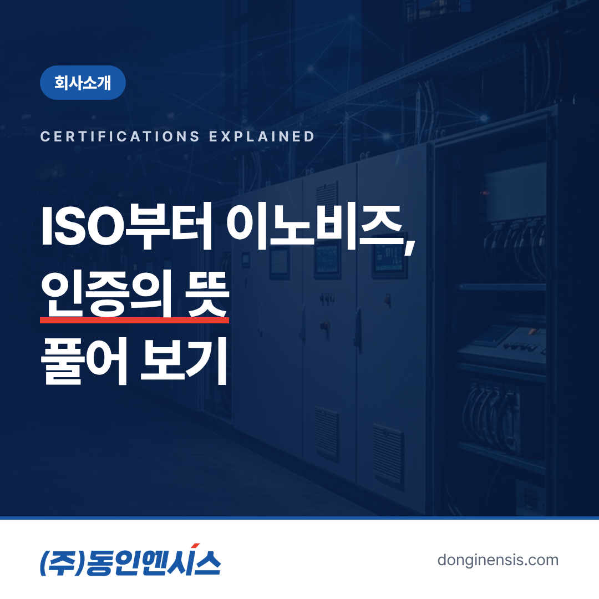
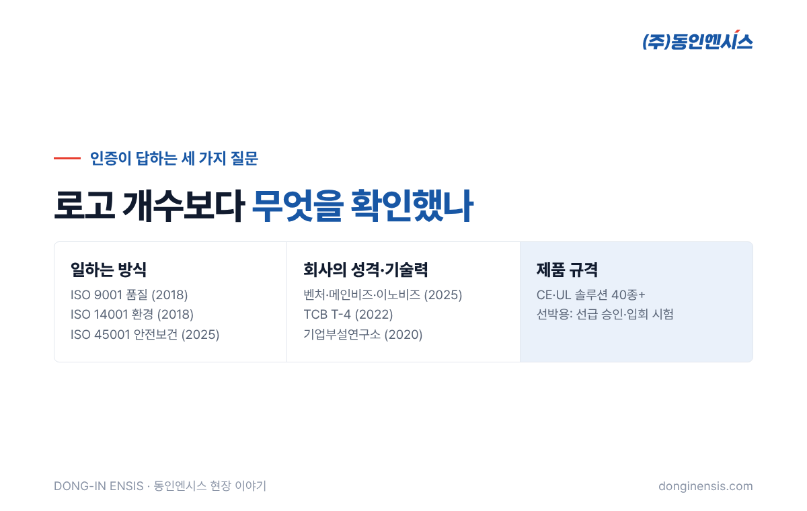
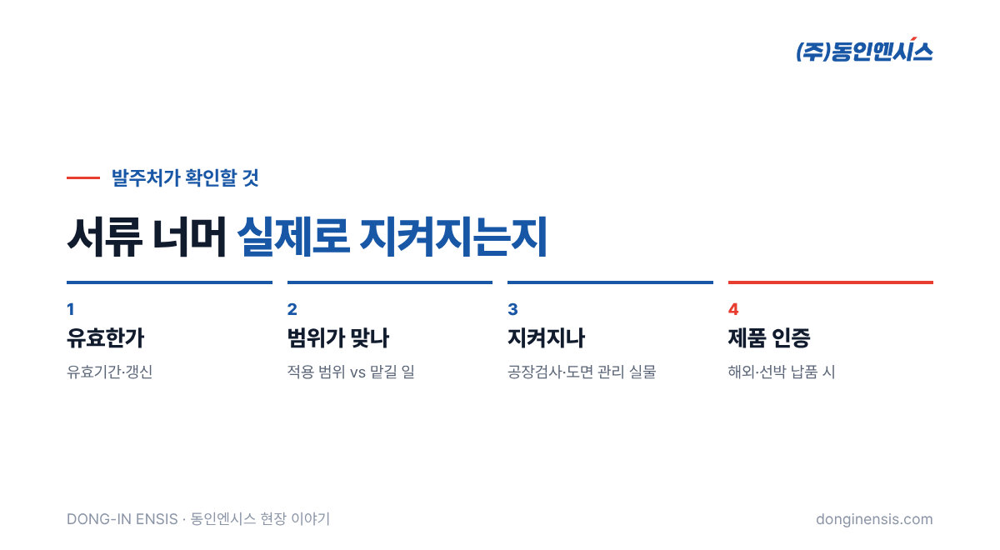

협력사를 고를 때 회사 소개서 마지막 장에는 늘 인증 로고가 줄지어 있습니다. ISO, 벤처, 메인비즈, 이노비즈. 모두 익숙한 이름이지만 각각이 무엇을 확인해 주는지 정확히 설명하기는 생각보다 쉽지 않습니다. 1991년부터 부산에서 산업 설비와 선박의 제어반을 만들어 온 동인엔시스가 갖춘 인증을 예로, 제어반 업체 인증에 자주 등장하는 용어를 하나씩 풀어 보겠습니다. 제어반 발주처의 구매·품질 담당자가 협력사를 볼 때 참고하시기 좋도록 썼습니다.
인증은 크게 두 갈래로 나눌 수 있습니다. 하나는 회사가 일하는 방식을 확인하는 인증이고, 다른 하나는 회사의 성격이나 기술력을 확인하는 인증입니다. 여기에 제품 자체가 특정 규격을 만족한다는 제품 인증이 더해집니다.
세 가지는 서로 다른 질문에 답합니다. 그래서 제어반 업체 인증을 볼 때는 로고의 개수보다 각 인증이 어떤 질문에 답하는지를 먼저 보는 편이 정확합니다. '이 회사는 일을 체계적으로 하는가', '이 회사는 어떤 회사인가', '이 제품은 규격을 지키는가'. 협력사를 볼 때는 세 질문을 나눠서 보는 것이 좋습니다.

고객이 요구하는 품질을 꾸준히 지키기 위한 일의 체계를 갖추었는지 확인하는 국제 표준입니다. 주문을 받는 순간부터 설계, 제작, 검사, 출하, 사후 대응까지 각 단계에서 무엇을 기록하고 어떻게 고쳐 나가는지를 봅니다. 제어반으로 치면 도면 관리, 부품 입고 검사, 공장검사 기록 같은 것들이 이 체계 안에 들어갑니다. 문제가 생겼을 때 원인을 찾아 같은 일이 반복되지 않게 고치는 과정까지 포함한다는 점이 핵심입니다. 저희는 2018년에 이 인증을 받았습니다.
일하는 과정에서 생기는 환경 영향을 파악하고 줄여 나가는 체계를 확인하는 표준입니다. 폐기물 처리, 에너지 사용, 유해 물질 관리 같은 것들이 대상입니다. 제어반 제작 과정에서 나오는 전선 자투리와 포장재, 공장의 에너지 사용도 이 체계 안에서 관리합니다. 같은 해 품질경영 인증과 함께 갖췄습니다.
일하는 사람의 안전과 건강을 지키기 위한 체계를 확인하는 표준입니다. 작업 중 위험 요소를 찾아내고, 사고를 막는 절차를 정해 지키고 있는지를 봅니다. 전기를 다루고 현장 설치와 시운전이 잦은 제어반 회사에게 특히 의미가 큰 인증입니다. 고객 현장에서 일하는 시간이 긴 만큼, 우리 직원의 안전이 곧 고객 현장의 안전과도 이어지기 때문입니다. 2025년에 이 인증이 더해졌습니다.
기술이나 사업 모델에서 성장 가능성을 인정받은 기업을 확인하는 제도입니다. 새로운 기술을 사업화하려는 기업이라는 뜻으로 읽을 수 있습니다. 제어반 회사라면 기존 제작 일에 머물지 않고 새 제품이나 서비스를 만들어 가는 쪽이라는 신호로 볼 수 있습니다.
경영 방식을 꾸준히 개선해 온 중소기업을 확인하는 제도입니다. 조직 운영, 성과 관리 같은 경영 측면의 혁신 활동을 봅니다. 기술만큼이나 회사가 안정적으로 굴러가는지를 보는 인증이라, 장기 거래처를 찾는 발주처가 눈여겨볼 만합니다.
기술 개발 역량과 그 기술을 사업으로 연결하는 능력을 갖춘 중소기업을 확인하는 제도입니다. 연구 개발 활동과 기술 경쟁력을 중심으로 평가합니다. 연구소를 두고 특허를 내며 실증 과제에 참여하는 활동이 이런 평가와 맞닿아 있습니다. 벤처기업, 메인비즈, 이노비즈 세 가지는 2025년에 함께 갖췄습니다.
기술신용평가(TCB)는 기업이 가진 기술의 가치와 사업화 역량을 평가해 등급으로 나타내는 제도입니다. 재무제표만으로는 보이지 않는 기술력을 숫자로 보여 준다는 점에서 의미가 있습니다. 저희가 받은 등급은 2022년의 T-4입니다.
일정한 요건을 갖춘 연구 조직을 둔 기업임을 확인하는 제도입니다. 저희 친환경기술연구소가 2020년부터 기업부설연구소로 운영되고 있습니다.
Photorealistic photo of an organized engineering office shelf with labeled binders (no readable text), a desk with printed wiring diagrams and an inspection checklist form (no readable text), a laptop, soft daylight, documentary style, no brand logos, no readable text. 3:2 landscape.
회사 인증과 별개로, 제품 자체의 인증도 있습니다. 유럽으로 가는 제품에 쓰이는 CE, 북미 시장에서 많이 요구되는 UL 같은 표시가 대표적입니다. CE·UL 인증을 받은 솔루션을 40종 넘게 갖추고 있어, 해외 현장으로 가는 제어반에도 대응하고 있습니다.
배에 들어가는 제어반은 또 다른 관문이 있습니다. 선급의 승인입니다. 선박용으로 쓰는 컨트롤러(Modicon M262)는 선급끼리 서로 인정하는 인증서를 갖추고 있지만, 그것과 별개로 제어반 자체도 배마다 도면을 승인받고 검사관 앞에서 시험을 통과해야 배에 오를 수 있습니다. 부품 인증과 완성품 승인이 두 겹으로 필요한 셈입니다.
인증 로고가 많다고 해서 모든 것이 보장되는 것은 아닙니다. 제어반 업체 인증은 출발점이고, 실제로 그 체계가 현장에서 돌아가는지를 함께 봐야 합니다. 인증을 볼 때 아래 몇 가지를 함께 확인하면 더 정확한 판단을 할 수 있습니다.
동인엔시스의 인증서와 특허, 회사소개서는 홈페이지 자료실에서 확인하실 수 있습니다.

Photorealistic photo inside a Korean control panel factory: a visitor in a white shirt and safety vest and a Korean engineer in a navy uniform reviewing a clipboard together in front of an open light-grey control cabinet under test, other cabinets in background, bright lighting, documentary style, no brand logos, no readable text. 3:2 landscape.
Q. 제어반 업체 인증 가운데 가장 먼저 볼 것은 무엇인가요? 맡기려는 일에 따라 다릅니다. 일반적으로는 먼저 품질경영(ISO 9001)으로 일하는 체계를, 해외·선박 납품이라면 제품 인증과 선급 승인 대응 경험을 먼저 확인합니다.
Q. 인증서 사본을 받을 수 있나요? 홈페이지 자료실에서 인증 관련 자료를 확인하실 수 있고, 필요한 서류는 문의 주시면 안내드립니다.
Q. 인증 말고 무엇을 함께 보면 좋을까요? 비슷한 설비를 다뤄 본 경험과 공장검사·시운전 방식을 함께 보시길 권합니다. 동인엔시스는 750건이 넘는 프로젝트를 수행했습니다.
인증은 회사가 스스로 한 약속을 다른 기관이 확인해 준 기록입니다. 그 약속이 무엇인지 알고 보면, 회사 소개서 마지막 장의 로고들이 훨씬 구체적으로 읽힙니다. 동인엔시스는 그 약속을 제어반 한 대 한 대에서 지키려 합니다.
문의 051-862-3668 · dongin@donginmne.com
아래 질문 중 하나에 실제 경험으로 답해 본문 적당한 곳에 넣어 주세요. 사람이 직접 쓴 문장이 들어가면 네이버에서 저품질 위험이 줄고 노출에 도움이 됩니다.